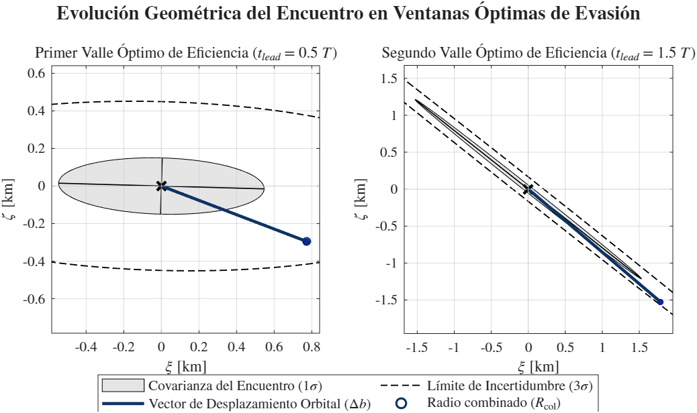
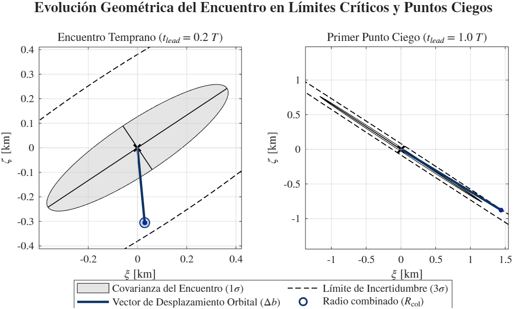

2. Análisis de Sensibilidad de Perturbaciones (GMAT)

Figura 2.1: Sensibilidad temporal del error absoluto espacial en LEO (500 km).
Tabla 2.1: Deriva espacial acumulada tras dos órbitas (3 h).
| Fuerza Perturbadora | Orden de Magnitud |
|---|---|
| Arrastre Atmosférico (Drag) | 103 m |
| Presión de Radiación Solar (SRP) | 10-3 m |
| Efecto de Achatamiento (J2) | 102 - 103 arcsec |
| Armónicos restantes / Tercer Cuerpo | 100 - 10-1 arcsec |
| Efectos Relativistas | 10-5 arcsec |
Criterio de descarte:
El modelo incorpora exclusivamente J2 y arrastre atmosférico para lograr un equilibrio entre eficiencia computacional y fidelidad física. Se descartan el resto de perturbaciones al quedar por debajo de la incertidumbre de los radares de rastreo comerciales.
3. Lazo de Control: Validación Externa del Propagador de SK (GMAT)


Tabla 3.1: Perfil 1 - Plataforma Ligera (180 días)
| Órbita Osculatriz | Error Absoluto | Error Relativo |
|---|---|---|
| Semieje mayor, \( a \) | 21,883 m | 0,31859 % |
| Inclinación, \( i \) | 0,0073 deg | 0,00741 % |
| RAAN, \( \Omega \) | 1,5352 deg | 1,08286 % |
Tabla 3.2: Perfil 2 - Plataforma Intermedia (180 días)
| Órbita Osculatriz | Error Absoluto | Error Relativo |
|---|---|---|
| Semieje mayor, \( a \) | 4,915 m | 0,06915 % |
| Inclinación, \( i \) | 0,0053 deg | 0,00539 % |
| RAAN, \( \Omega \) | 1,1471 deg | 0,95314 % |
Tabla 3.3: Perfil 3 - Plataforma Pesada (180 días)
| Órbita Osculatriz | Error Absoluto | Error Relativo |
|---|---|---|
| Semieje mayor, \( a \) | 10,084 m | 0,14257 % |
| Inclinación, \( i \) | 0,0034 deg | 0,00342 % |
| RAAN, \( \Omega \) | 1,1805 deg | 0,95818 % |
$$\Delta a(t) = |a_{\text{MATLAB}}(t) - a_{\text{GMAT}}(t)|$$
$$\Delta \mathbf{r}(t) = \Delta r_R(t) \hat{\mathbf{u}}_R + \Delta r_T(t) \hat{\mathbf{u}}_T + \Delta r_N(t) \hat{\mathbf{u}}_N$$
*Nota: El desajuste inicial (offset) responde a la discrepancia entre el filtro energético propio y la formulación analítica de Brouwer-Lyddane de GMAT.
3. Lazo de Control: Validación Numérica del Módulo de COLA

$$P_c = \exp\left(-\frac{w}{2}\right) \sum_{m=0}^{\infty} \frac{1}{m!} \left(\frac{w}{2}\right)^m \left[ 1 - \exp\left(-\frac{u}{2}\right) \sum_{k=0}^{m} \frac{1}{k!} \left(\frac{u}{2}\right)^k \right]$$
t = 0,5 T: Incertidumbre horizontal. Desplazamiento \(\mathbf{\Delta b}\) lateral eficiente fuera de 1\(\sigma\).
t = 1,5 T: Incertidumbre diagonal elongada. Vector \(\mathbf{\Delta b}\) colineal estirado hasta el límite de 3\(\sigma\).
t= 0,2 T: Incertidumbre inclinada. Reacción tardía fuerza un vector \(\mathbf{\Delta b}\) cuasi-vertical.
t = 1,0 T: Punto ciego. Vector \(\mathbf{\Delta b}\) atrapado en el eje de máxima dispersión (guiado nulo).


4. Resultados: ANÁLISIS DE TRANSICIÓN ESTRATÉGICA

Comportamiento del Lazo
• Máximo Ahorro Propulsivo (\(W \to 0\)):
Uso mayoritario de encendidos anticipados (Estrategia A) y libres (Estrategia B). Aprovecha la deriva por arrastre atmosférico para mitigar el riesgo con el menor gasto de combustible.
• Mínima Interferencia Temporal (\(W \to 1\)):
Predominio de la Estrategia C (Maniobra Ortogonal). El semieje mayor no se altera (\(\delta a_{\text{C}} = 0\)), evitando intrusiones operativas (\(N_{\text{int}} = 0\)) a costa de aumentar el consumo de combustible.
4. Resultados: Frentes de Pareto y Puntos de Compromiso
 small.png)
Sensibilidad Balística según Drag (Frente Continuo)
• Plataforma Ligera (\(500\text{ km}\)): Máximo consumo nominal. La mayor densidad atmosférica a baja altitud exige encendidos de SK más frecuentes.
• Plataforma Pesada (\(693\text{ km}\)): Consumo intermedio. Su mayor relación superficie/masa le permite aprovechar la deriva aerodinámica para ahorrar combustible.
• Plataforma Intermedia (\(725\text{ km}\)): Mínimo consumo nominal. A esta altitud la fuerza de arrastre es muy reducida y suaviza la pendiente del frente.
 small.png)
Punto de Compromiso Unificado (\(W = 0,01\))
• Zona de Compromiso (\(W = 0,01\)): Ubicada en el codo del frente, equilibra la reducción de intrusiones operativas sin penalizar en exceso el \(\Delta V\).
• Métrica Fija de Comparación: Aplicar el mismo peso \(W\) a las tres plataformas permite evaluarlas bajo un criterio idéntico.
• Impacto Operacional: Limita las intrusiones a \(N_{\text{int}} = 3\) (Ligera/Pesada) y \(N_{\text{int}} = 2\) (Intermedia), evitando la Estrategia C que duplicaría el gasto.
4. Resultados (W=0,01): Validación Dinámica Temporal y Evaluación
 small.png)
 small.png)
 small.png)
Tabla 4.4: Matriz de Rendimiento Operativo Comparado (\(W=0,01\))
| Perfil | \(\Sigma \Delta V_{\text{nom}}\) | \(\Sigma \Delta V_{\text{real}}\) | \(\Delta V_{\text{penal}}\) | SK | A|B|C |
|---|---|---|---|---|---|
| Ligera | 1660,27 | 3010,82 | +81,3% | 4 | 0|3|2 |
| Intermedia | 105,63 | 689,38 | +552,6% | 0 | 2|0|3 |
| Pesada | 594,295 | 1087,611 | +83,6% | 30 | 3|0|2 |
• Plataforma Ligera (Perfil=1): Usa la estrategia B gracias a su deadband de 500 m minimizando el \( \Delta v\). Penalización contenida en +81,3%.
• Plataforma Intermedia (Perfil=2): Sin drag disipativo a 725 km ni posibilidad de realizar la evasión B, se dispara la penalización a +552,6%.
• Plataforma Pesada (Perfil=3): Evasión A absorbed en encendidos periódicos de SK. Penalización contenida en +83,6%.
4. Resultados (Plataforma Ligera): Sensibilidad al Clima Espacial
 small.png)
Impacto del Clima Espacial (Frente Continuo)
• Máximo Solar (\(2,0 \times \text{drag}\)): El incremento de densidad atmosférica (\(\rho\)) eleva la resistencia aerodinámica y desplaza hacia arriba el coste base de mantenimiento orbital (\(\Sigma \Delta v_{\text{nom}}\)).
• Mínimo Solar (\(0,5 \times \text{drag}\)): Menor degradación orbital. Permite espaciar los encendidos y reduce el suelo de consumo total de la misión.
• Efecto Gradiente: El fuerte rozamiento en máximo solar suaviza la pendiente del frente, reduciendo la sensibilidad del \(\Delta V\) ante restricciones temporales.
 small.png)
Sensibilidad Climática a Intrusión (Frente Discreto)
• Máximo Solar (\(2,0 \times \text{drag}\)): El rápido decaimiento orbital supera el límite de tolerancia de altitud (deadband). El supervisor aplica veto de coste infinito (\(J_{\text{B}} = \infty\)), interrumpiendo el frente para valores altos de \(N_{\text{int}}\).
• Mínimo Solar (\(0,5 \times \text{drag}\)): Con \(W = 0,01\), el reducido rozamiento impide corregir pasivamente la posición, obligando al sistema a conmutar de forma continua a la Estrategia C.
4. Resultados (Plataforma Ligera): Convergencia de Monte Carlo

Sintonización e inyección de ruido
Error correlacionado (Incertidumbre Posicional):
$$\mathbf{\delta r}_k = \mathbf{L} \mathbf{z}_k$$
Donde \(\mathbf{L}\) es la factorización de Cholesky de la covarianza de posición inicial \((\mathbf{C}_{\text{pos},0} = \mathbf{L}\mathbf{L}^T)\) recuperada del dataset Collision Avoidance Challenge de la ESA.
$$\mu = \frac{1}{1000} \sum_{k=1}^{1000} \sum \Delta v_k$$
$$\sigma = \sqrt{\frac{1}{999} \sum_{k=1}^{1000} \left( \sum \Delta v_k - \mu \right)^2}$$
• Fase Transitoria (\(k < 300\)): Fluctuaciones severas por la dispersión aleatoria del ruido de posición.
• Estabilización Asintótica (\(k > 700\)): Amortiguación de la varianza con gradiente diferencial nulo, validando la convergencia estadística.
4. Resultados (Plataforma Ligera + W=0,01): Análisis de Monte Carlo

Distribución Multimodal del Lazo Discreto
La respuesta estocástica presenta una distribución multimodal inducida por la conmutación discreta del supervisor entre 3 decisiones estratégicas:
• Modo 1 (\(3008,75\text{ mm/s}\)): La incertidumbre reduce el riesgo, permitiendo una maniobra evasiva B mínima.
• Modo 2 (\(3010,67\text{ mm/s}\)): Zona nominal donde el lazo corrige desviaciones sutiles para garantizar la seguridad.
• Modo 3 (\(3012,37\text{ mm/s}\)): Mayor criticidad con violación de deadband; se activa el veto \(J_{\text{B}} = \infty\) forzando el salto a la Opción C.
| Estadístico Muestral | Valor |
|---|---|
| Media muestral (\(\mu\)) | 3010,67 mm/s |
| Desviación (\(\sigma\)) | 0,807 mm/s |
| Coste mínimo absoluto | 3008,75 mm/s |
| Coste máximo absoluto | 3012,37 mm/s |
| Tasa éxito (\(P_{\text{succ}}\)) | 100,0 % |
Diapositivas Adicionales: Geometría del Encuentro y B-Plane